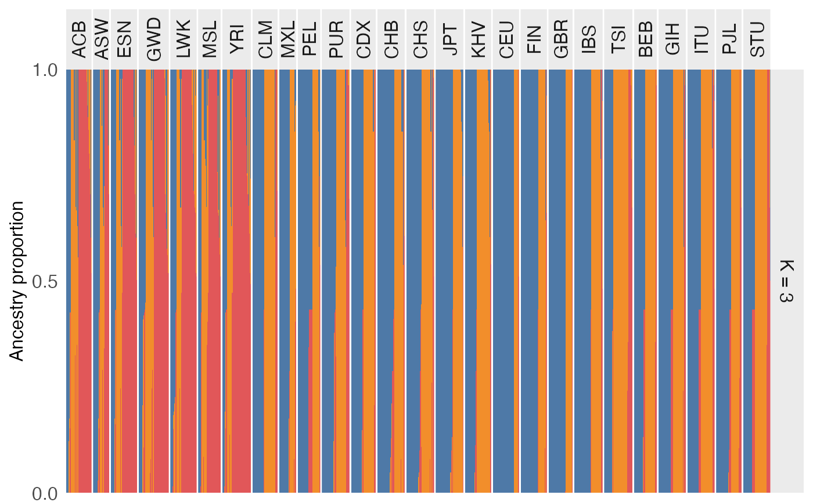
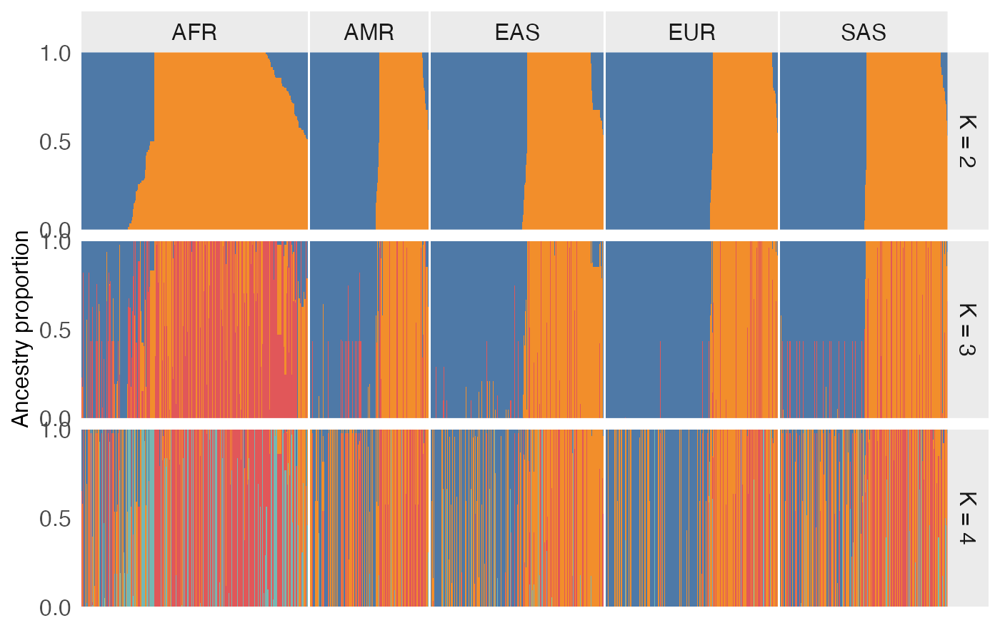

Draws the classic admixture bar plot: each person is a thin vertical bar, divided into coloured segments showing the estimated proportion of their genome from each ancestral group. People are grouped by population or super-population, and sorted within each group by their main ancestry.
Usage
plot_admixture(adm, k, group = c("super_pop", "pop"), title = NULL)Arguments
- adm
The result of
run_admixture().- k
One or more
Kvalues to plot.- group
Group people by
"super_pop"or"pop".- title
Plot title.
Details
Colours represent the ancestral groups found by the analysis, not
populations, so they are deliberately different from the population
colours used in other plots. Several K values can be drawn at once, one
row per K; groups are matched across K values (see run_admixture()),
so the same colour usually means a similar group.
Examples
# \donttest{
lct <- filter_snps(example_lct, min_maf = 0.05, prune_ld = TRUE)
adm <- run_admixture(lct, k = 2:4, reps = 2)
#> Running admixture for K = 2, 3, and 4 (2 runs each, 12 SNPs)...
plot_admixture(adm, k = 3, group = "pop")

plot_admixture(adm, k = 2:4)

# }